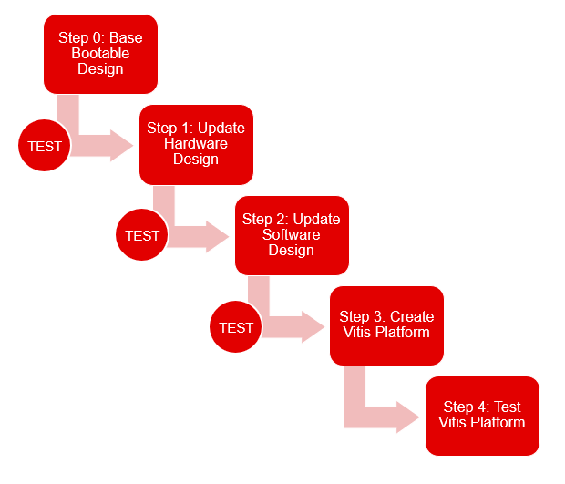

Vitis™ Platform Creation TutorialsSee Vitis™ Development Environment on xilinx.com |
Platform Creation Overview¶
Introduction to Vitis Acceleration Platform¶
A platform is a starting point of your Vitis design. Vitis applications are built on top of the platforms. Acceleration applications need acceleration platforms. They can be embedded platforms or DC platforms. Software development applications can be built on software development platforms or embedded acceleration platforms. This document focuses on embedded acceleration platform creation.
Xilinx has provided base platforms for Xilinx Evaluation Boards. The platforms can be downloaded from Xilinx Download Center. Source code of base platforms can be downloaded from Xilinx github.
User can create custom embedded acceleration platforms by building from scratch, or modifing Xilinx embedded platforms. This document focuses on building from scratch workflow.
There are generally three steps to create a Vitis embedded platform: Setup hardware interface, setup software components and package the platform. The whole flow would require some preparation and final testing.

Here’s a brief description of what are covered in each step.
| Step Target | Step Details | |
|---|---|---|
| Step0 | Prepare a starting point: a bootable hardware and software setting for your board. | Make sure the image can boot the board successfully and peripherals can work properly. Bring up the board is not a part of Vitis embedded platform creation. It's required anyway if Vitis is not used in the development flow. If it's starting from a validated board configuration, such as a Xilinx Evaluation Board, this step can be omitted. |
| Step1 | Add Hardware Interfaces for Vitis Platform | Add AXI interfaces for control and data access Add clock and interrupt for acceleration kernels to use |
| Step2 | Update Software Components for Vitis Platform | Add XRT software libraries and dependencies in PetaLinux because Vitis applications use XRT to control acceleration kernels. Generate PetaLinux image. |
| Step3 | Package a Vitis Platform | Use Vitis GUI or XSCT packaging command to generate platform files |
| Step4 | Platform Verification | Test the platform with various test cases to make sure it works as expected. |
Detailed requirements of these steps are described in UG1393.
The tutorials in this document will divide the chapters to follow these steps.
The next module provides an example to create a custom platform for ZCU104 board from scratch.
Copyright© 2020 Xilinx